Selección Campeona del Mundo
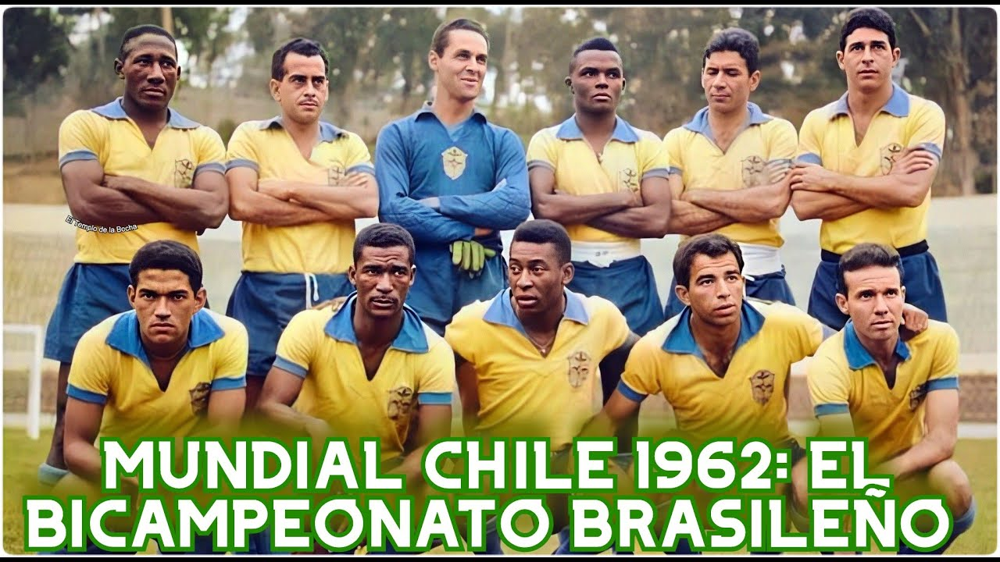
Poster oficial del Mundial de Chile 1962
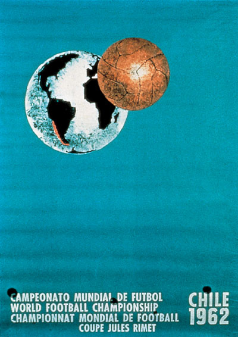
Trofeo del Mundial de Chile 1962
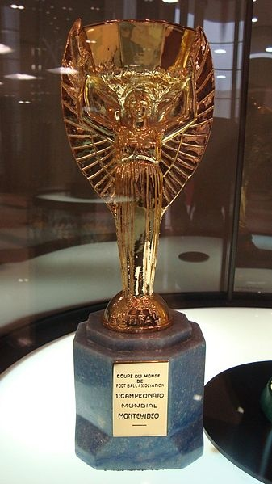
Álbum de cromos del Mundial de Chile 1962

Balón oficial del Mundial de Chile 1962
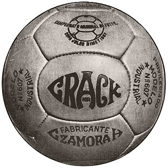
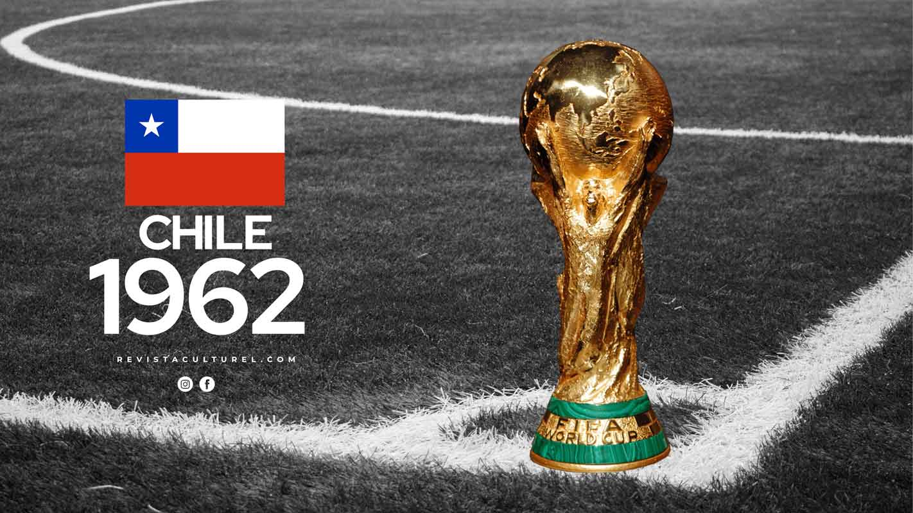
Selección Campeona del Mundo

Poster oficial del Mundial de Chile 1962

Trofeo del Mundial de Chile 1962

Álbum de cromos del Mundial de Chile 1962
Balón oficial del Mundial de Chile 1962

Debutantes Bulgaria, Colombia
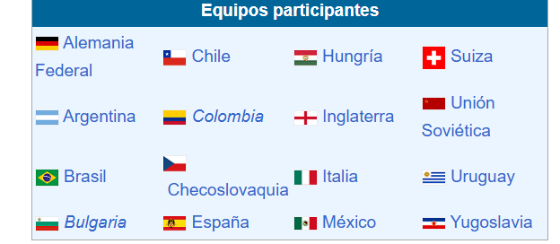
Estadísticas del Mundial Chile 1962
Estadios del Mundial de Chile 1962

Estadio Nacional - Santiago
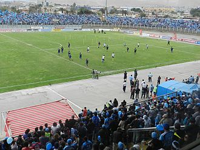
Carlos Dittborn - Arica
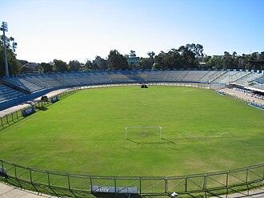
Sausalito - Viña del Mar
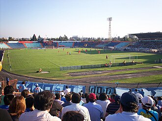
Braden Copper Co. - Rancagua
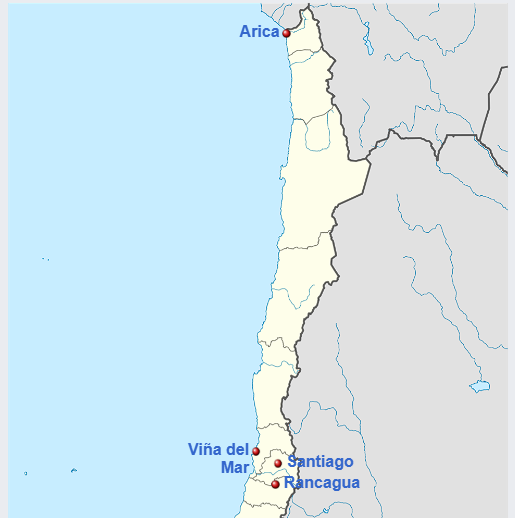
Ubicaciones de los estadios del Mundial de Chile 1962
Semifinales del Mundial de Chile 1962
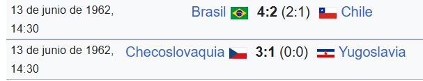
Final del Mundial de Chile 1962
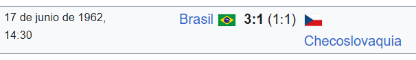
Tabla de puntajes
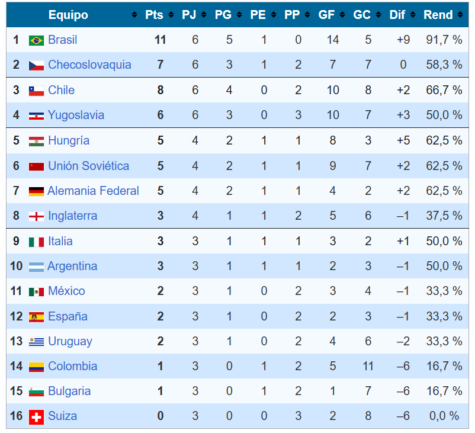
Alojamientos
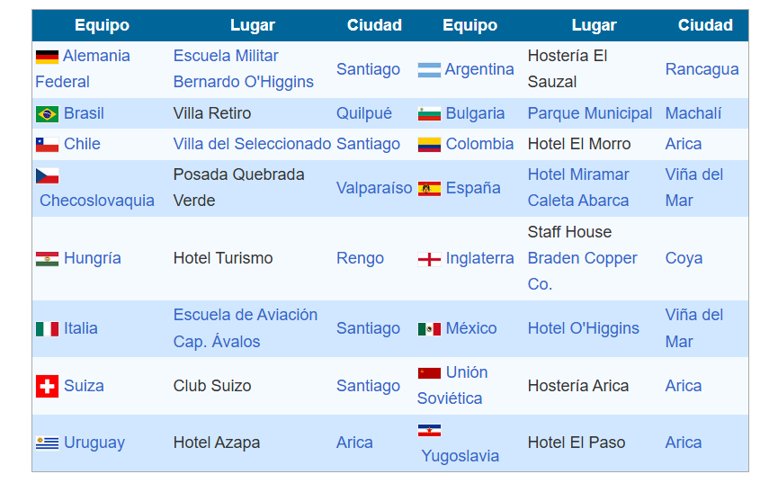
Goleadores
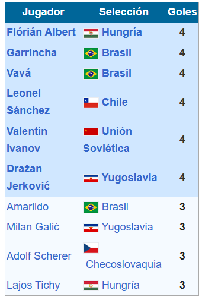
Garrincha fue uno de los grandes protagonistas.
| Fecha | Fase | Partido | Resultado | Estadio |
|---|---|---|---|---|
| 30/05/1962 | Grupo 1 | Uruguay vs Colombia | 2-1 | Estadio Carlos Dittborn (Arica) |
| 30/05/1962 | Grupo 2 | Chile vs Suiza | 3-1 | Estadio Nacional (Santiago) |
| 31/05/1962 | Grupo 3 | Brasil vs México | 2-0 | Estadio Sausalito (Viña del Mar) |
| 02/06/1962 | Grupo 4 | Hungría vs Inglaterra | 2-1 | Estadio Braden (Rancagua) |
| 10/06/1962 | Cuartos | Chile vs Unión Soviética | 2-1 | Estadio Nacional (Santiago) |
| 10/06/1962 | Cuartos | Brasil vs Inglaterra | 3-1 | Estadio Sausalito (Viña del Mar) |
| 10/06/1962 | Cuartos | Checoslovaquia vs Hungría | 1-0 | Estadio Braden (Rancagua) |
| 10/06/1962 | Cuartos | Yugoslavia vs Alemania Occidental | 1-0 | Estadio Carlos Dittborn (Arica) |
| 13/06/1962 | Semifinal | Brasil vs Chile | 4-2 | Estadio Nacional (Santiago) |
| 13/06/1962 | Semifinal | Checoslovaquia vs Yugoslavia | 3-1 | Estadio Sausalito (Viña del Mar) |
| 16/06/1962 | Tercer Lugar | Chile vs Yugoslavia | 1-0 | Estadio Nacional (Santiago) |
| 17/06/1962 | Final | Brasil vs Checoslovaquia | 3-1 | Estadio Nacional (Santiago) |
| Concepto | Dato |
|---|---|
| Campeón | 🇧🇷 Brasil |
| Subcampeón | 🇨🇿 Checoslovaquia |
| Tercer Lugar | 🇨🇱 Chile |
| Cuarto Lugar | 🇾🇪 Yugoslavia |
| Partidos jugados | 32 |
| Goles totales | 89 |
| Promedio de goles por partido | 2.78 |
| Asistencia total | 893.172 espectadores |
| Promedio de asistencia | ≈ 27.912 por partido |
| Máximos Goleadores | Garrincha y Vavá (Brasil), Leonel Sánchez (Chile), Flórián Albert (Hungría), etc. - 4 goles |
| Selecciones participantes | 16 |
| Sede | Chile |
| Nota Histórica | Brasil bicampeón • Garrincha brilla tras lesión de Pelé |